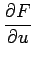
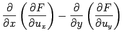
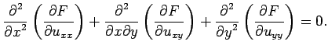
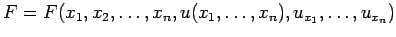
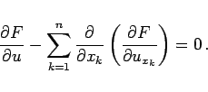

Inhalt Index DeskTop Bronstein

 Variationsrechnung Variationsaufgaben mit Funktionen mehrerer Veränderlicher
Variationsrechnung Variationsaufgaben mit Funktionen mehrerer Veränderlicher


Es sollen zwei Verallgemeinerungen der einfachen Variationsaufgabe betrachtet werden.
F=F(x,y,u(x,y),ux,uy,uxx,uxy,uyy): Das Funktional der Variationsaufgabe hängt von partiellen Ableitungen höherer Ordnung der gesuchten Funktion u(x,y) ab. Im vorliegenden Fall, in dem die partiellen Ableitungen bis zur 2. Ordnung einschließlich auftreten, lautet die EULERsche Differentialgleichung:
|  | - |  | |
| + |  | (10.50) |
: Im Falle einer Variationsaufgabe, bei der n unabhängige Variablen  auftreten, lautet die EULERsche Differentialgleichung:
auftreten, lautet die EULERsche Differentialgleichung:
|  | (10.51) |